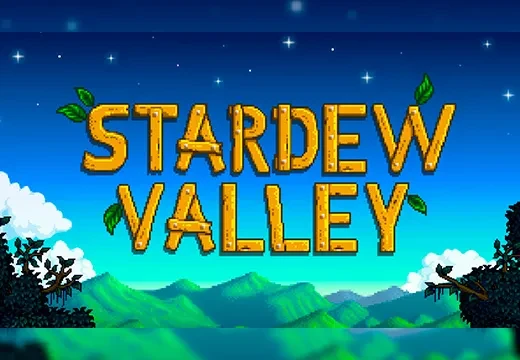
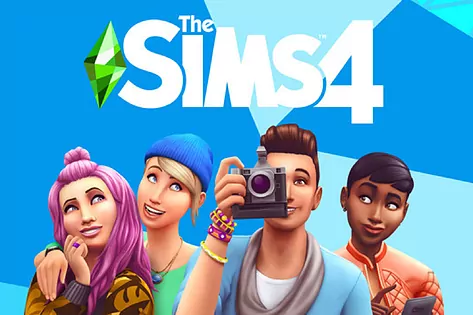
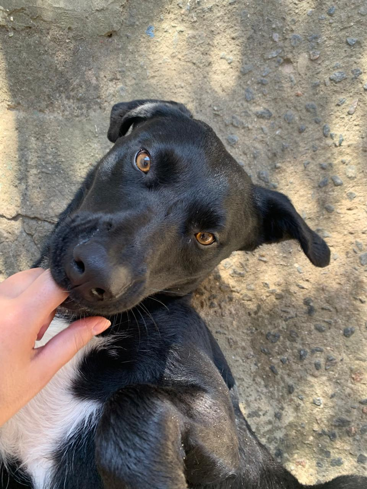

Essa é a Ellie, ela tem 2 anos. E ao lado, a inspiração do seu nome, a Ellie do jogo The Last of Us.

Acredito que a análise de dados e a inteligência artificial têm o potencial de transformar diversos setores, desde a saúde até o entretenimento, e quero fazer parte dessa transformação.
Comecei a estudar sobre o assunto por conta própria, através de cursos online e tutoriais, e percebi que essa é a área em que quero me especializar.
O primeiro curso que estudei foi sobre introdução à programação em Python, com o Guanabara.
Meu objetivo acadêmico é me formar com excelência, adquirindo conhecimentos sólidos em ciência de dados e inteligência artificial, e aplicá-los em projetos inovadores que possam impactar positivamente a sociedade.
Além disso, pretendo participar de pesquisas e estágios que me permitam colocar em prática o que aprendi e continuar aprendendo com profissionais experientes na área.
GitHub: carolgrcias
Email: anacarolinagrcia@gmail.com